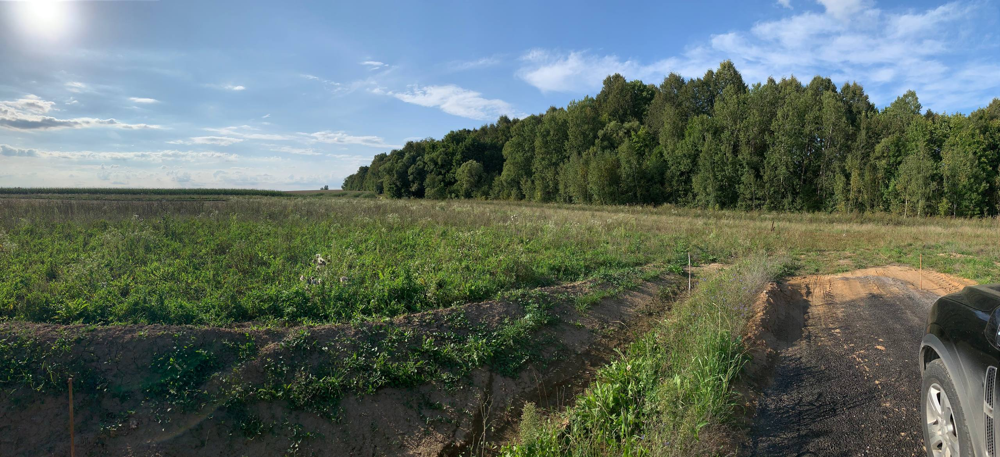
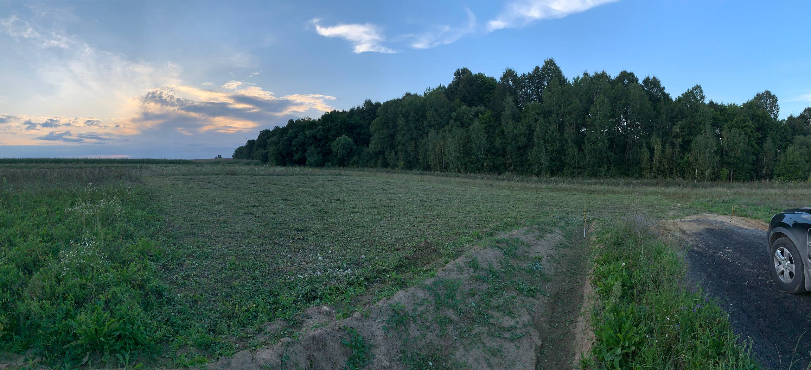

Опыт и аккуратность
Работаем с частными участками и коммерческими объектами, соблюдаем границы посадок и ландшафта.
Оперативно, аккуратно и с гарантией результата. Бесплатный выезд на оценку по Обнинску и в радиусе 40 км.

До
ПослеРаботаем с частными участками и коммерческими объектами, соблюдаем границы посадок и ландшафта.
Триммеры, косилки и расходники премиум-класса — чистый и ровный покос даже на сложных участках.
Если есть замечания — бесплатно дорабатываем участок в разумные сроки.
По желанию клиента собираем и вывозим скошенную траву, оставляя участок в порядке.
Работаем по Обнинску, Боровску, Ворсино, Балабаново, Ермолино и в радиусе 40 км от Обнинска.